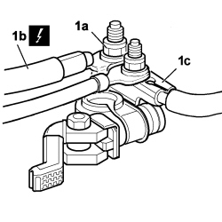
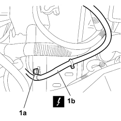
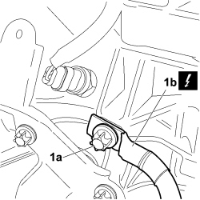

5530B22 BATTERY EARTH LEAD - R+R
- Path
- Procedures > 55 ELECTRICAL EQUIPMENT > 5530 CURRENT GENERATION > 5530B BATTERY AND LEADS > 5530B22 BATTERY EARTH LEAD - R+R
- Kind
- repair procedure (removal / refitting; the operation number is the code)
- Applies to
- all engines; all production periods
- Interactive page
- https://sloeber94.github.io/elrnDB-fCrm/en/#/194000720
Applies to: all engines; all production periods
 Removing
Removing
 Refitting
Refitting- Turn the ignition key to the OFF position and extract it.
- Open the bonnet.
Op. 5530B52 BATTERY SUPPORT/DRIP TRAY - R.R
1. Unscrew nut (1a) and disconnect electrical connection (1b) from the battery negative terminal (1c).
Description | Connector | |
|---|---|---|
1b | BATTERY |

Applies to: all engines; all production periods
1. Unscrew bolt (1a) and disconnect the electrical connection of the earth cable (1b) from the vehicle body.
Description | Connector | |
|---|---|---|
1b | BATTERY EARTH ON BODYSHELL |

Applies to: all engines; all production periods
1. Unscrew bolt (1a) and disconnect the electrical connection of the earth cable (1b) on the gearbox and remove from the vehicle.
Description | Connector | |
|---|---|---|
1b | BATTERY EARTH ON ENGINE |

Applies to: all engines; all production periods
Refitting
Removing- Check that the battery earth cable is undamaged. If necessary, carry out the appropriate continuity checks.
- Connect the earth lead electrical connection to the gearbox, screw in the bolt and tighten to the specified torque.
Description | Connector | |
|---|---|---|
- | BATTERY EARTH ON ENGINE |
Component | Fastening | dia | Value (daNm) | Validity |
|---|---|---|---|---|
BATTERY EARTH ON GEARBOX | Bolt | 1.2 ÷ 1.8 | 1.8 16v |
- Connect the earth lead electrical connection to the body and tighten the bolt to the specified torque.
Description | Connector | |
|---|---|---|
- | BATTERY EARTH ON BODYSHELL |
Component | Fastening | dia | Value (daNm) | Validity |
|---|---|---|---|---|
BATTERY EARTH ON BODYSHELL | Bolt | 1.2 ÷ 1.8 | 1.8 16v |
- Connect the electrical connection to the battery negative lead.
Description | Connector | |
|---|---|---|
1b | BATTERY |
Topics linked from this page (5)
- 5530B10 BATTERY - R+R
- 5530B52 BATTERY SUPPORT/DRIP TRAY - R.R
- A001 BATTERY
- C002 BATTERY EARTH ON ENGINE
- C003 BATTERY EARTH ON BODYSHELL